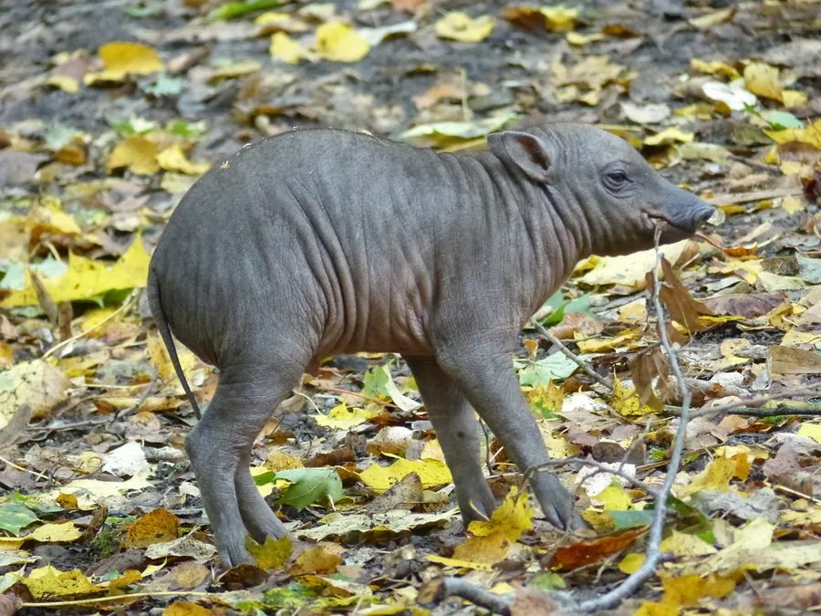

哺乳动物 · 动物界
鹿豚 Babyrousa celebensis

印度尼西亚苏拉威西岛特有的野猪，雄兽上犬齿穿透吻部向上弯曲成獠牙，外形怪异，仅存于少数岛屿的雨林中。
- 分类
- 门脊索动物门纲哺乳纲目偶蹄目科猪科属鹿豚属
- 栖息环境
- 苏拉威西岛低地热带雨林，尤其靠近河流与沼泽的森林
- 地理分布
- 印度尼西亚苏拉威西岛及邻近小岛
- 保护级别
- IUCN 易危（VU）；非中国分布物种
物种志
鹿豚体长 85–110 cm，肩高约 65–80 cm，体重 60–100 kg，雄性略大。它的皮肤粗糙、呈灰褐色，几乎无毛；最引人注目的是雄兽的上犬齿，它们不向下生长，而是穿透吻部向上后方弯曲，形成一对或两对獠牙，老年个体的獠牙可长达 30 cm 以上。
鹿豚仅分布于印度尼西亚苏拉威西岛及其附近岛屿的热带雨林，喜欢靠近水源的低地森林，以树叶、果实、根茎和昆虫为食，多在晨昏活动，常结成小群。雄性用獠牙互相推挤争夺配偶，獠牙也用于挖掘和防御。雌性妊娠期约 150 天，每胎 1–2 仔，寿命约 10–20 年。由于栖息地砍伐和偷猎，鹿豚数量持续下降，被列为易危。
形态与习性
- 食性树叶、果实、根茎与昆虫
- 体长85–110 cm，肩高 65–80 cm
- 体重60–100 kg
- 寿命约 10–20 年
- 繁殖妊娠期约 150 天，每胎 1–2 仔
- 獠牙雄兽上犬齿穿透吻部向上弯曲，可达 30 cm 以上
趣味知识
- 鹿豚的獠牙不是向下生长，而是穿透吻部向上弯曲。
- 雄兽的獠牙可长达 30 cm 以上，用于争斗和挖掘。
- 鹿豚仅生活在苏拉威西岛及其附近岛屿的雨林中。